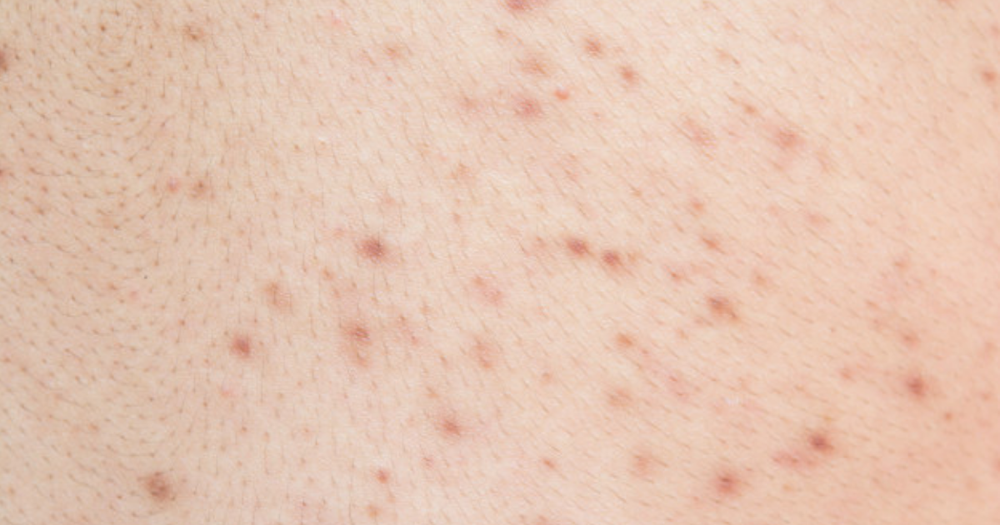

နောက်ကျောက ဝက်ခြံတွေ ဘယ်လို ရှင်းကြမလဲ

ဝက်ခြံပေါက်တာ ကြောက်စရာရောဂါတစ်ခု မဟုတ်ပေမဲ့ စိတ်အနှောင့်အယှက်တော့ ဖြစ်စေတာ အမှန်ပါ။ အပျိုပေါက်၊ လူပျိုပေါက်မှာပဲ ဝက်ခြံပေါက်တတ်တာလို့ ထင်နေရင် မှားသွားပါလိမ့်မယ်။ ဝက်ခြံဆိုတာ အကြောင်းကြောင်းကြောင့် အသက်အရွယ်မရွေး ပေါက်တတ်သလို ကိုယ်ပေါ်က နေရာတိုင်းမှာလည်း တွေ့ရနိုင်ပါတယ်။ အခုဆောင်းပါးမှာ နောက်ကျောဖက်က ဝက်ခြံတွေကို ဘယ််လိုရှင်းကြမလဲဆိုတာ ပြောပြပေးသွားပါ့မယ်။
ဝက်ခြံတွေ ဘာလို့ ပေါက်သလဲ
ကျွန်တော်တို့ ခန္ဓာကိုယ်ထဲကနေ Sebum လို့ခေါ်တဲ့ အဆီထုတ်လုပ်ပေးပါတယ်။ Sebum ထုတ်ပေးတဲ့ အဆီဂလင်းတွေက မွှေးညှင်းဂလင်းတွေနဲ့ ဆက်စပ်နေပါတယ်။ ဒါကြောင့် ထွက်လာတဲ့အဆီတွေက မွှေးညှင်းတွေဆီ ရောက်သွားပြီး အရေပြားကို အေးမြစေတာဖြစ်ပါတယ်။
အရေပြားပေါ်က ဆဲလ်အသေတွေနဲ့ ပိုလျှံနေတဲ့အဆီတွေစုပုံလာတဲ့အခါ အရေပြားပေါ်က (သာမန်မျက်စိနဲ့ မမြင်နိုင်တဲ့) မွှေးညှင်းပေါက်လေးတွေကို ပိတ်သွားစေပြီး ဘတ်တီးရီးယားတွေ ပေါက်ပွားလာစေပါတယ်။ မွှေးညှင်းပေါက်တွေ ဖူးရောင်လာရင် ဝက်ခြံခေါင်းဖြူဖြစ်လာပြီး ပိတ်ဆို့နေတဲ့ မွှေးညှင်းတွေ ပြင်ပလေနဲ့ ထိတွေ့သွားရင် ဝက်ခြံခေါင်းမဲတွေ ဖြစ်လာပါတယ်။
ဝက်ခြံဖြစ်စေတဲ့အဓိက အကြောင်းအရင်းတွေကတော့-
၁။ မျိုးရိုးဗီဇ
မိသားစုဝင်တွေက ဝက်ခြံပေါက်လေ့ရှိရင် ကိုယ့်အလှည့်မှာလည်း ပေါက်မှာပါပဲ။
၂။ သောက်ဆေးများ
ဆေးတချို့ရဲ့ ဘေးထွက်ဆိုးကျိုးကြောင့်လည်း ဝက်ခြံတွေထွက်လာနိုင်ပါတယ်။ ဥပမာ – စိတ်ကျရောဂါအတွက် သောက်ရတဲ့ဆေးတွေရဲ့ ဘေးထွက်ဆိုးကျိုးက ဝက်ခြံထွက်စေနိုင်ပါတယ်။
၃။ ဟော်မုန်းများ
အပျိုဖော်၊ လူပျိုဖော်ဝင်ချိန်မှာဖြစ်တဲ့ ဟော်မုန်းပြောင်းလဲမှုတွေကြောင့်လည်း ဝက်ခြံ ထွက်တတ်ပါတယ်။ အမျိုးသမီးတွေကတော့ ဓမ္မတာလာချိန်နဲ့ ကိုယ်ဝန်ဆောင်ချိန်မှာလည်း ဟော်မုန်းပြောင်းလဲမှုကြောင့် ဝက်ခြံပေါက်တတ်ပါတယ်။
၄။ ချွေးထွက်ခြင်း
ချွေးထွက်များပြီး အဝတ်အစားကိုလည်း ကျပ်ကျပ် ဝတ်တတ်တဲ့သူဆို ဝက်ခြံပိုထွက်ပါတယ်။ အရေပြားပေါ်မှာချွေးတွေ ပိတ်လှောင်ပြီး မွှေးညှင်းပေါက်တွေကို ပိတ်ဆို့သွားစေလို့ပါ။
၅။ စိတ်ဖိစီးမှု
စိတ်ဖိစီးမှုတစ်မျိုးတည်းကြောင့် ဝက်ခြံမထွက်ပေမဲ့ ထွက်ပြီးသား ဝက်ခြံတွေကို ပိုဆိုးစေပါတယ်။
တချို့လေ့လာမှုတွေကလည်း အစားအသောက်နဲ့ ဝက်ခြံထွက်တာနဲ့ဆက်စပ်နေတယ်လို့ ဆိုကြပြန်ပါတယ်။ အထူးသဖြင့် ကာဗိုဟိုက်ဒရိတ် ပါဝင်မှုများတဲ့ အစားအစာတွေဖြစ်တဲ့ အာလူးကြော်၊ ပီဇာ၊ ဟမ်ဘာဂါ ကြောင့် ဝက်ခြံတွေ ပိုဆိုးဆိုးရွားရွား ထွက်လာစေနိုင်ပါတယ်။
ဘယ်လို ကုသမလဲ
အများအားဖြင့် ဝက်ခြံတွေကို ကိုယ့်ရဲ့နေထိုင်စားသောက်မှု ပုံစံပြောင်းတာရယ်၊ အိမ်တွင်းနည်းလမ်း တချို့ သုံးပြီး သက်သာအောင်လုပ်နိုင်ပါတယ်။
၁။ လေ့ကျင့်ခန်း လုပ်ပြီးတိုင်း ရေချိုးပါ
အားကစားလုပ်တာ ကျန်းမာရေးအတွက် ကောင်းပါတယ်။ ခန္ဓာကိုယ်ထဲက ပိုလျှံနေတဲ့ အဆီပိုတွေလောင်ကျွမ်းစေသလို ချွေးအများကြီး ထွက်တာကြောင့် လူလည်း ပေါ့ပေါ့ပါးပါး ဖြစ်သွားစေပါတယ်။ ဒါပေမဲ့ ချွေးတွေက မွှေးညှင်းပေါက်မှာ သွားပိတ်ရင် ဝက်ခြံတွေပိုဆိုးလာမှာမို့ အားကစားလုပ်ပြီးတိုင်း သေချာရေချိုးပေးပါ။
၂။ ချီး တွန်းပါ
ရိုးရိုး ရေချိုးဆပ်ပြာထပ်စာရင် ဆယ်လီဆိုင်လစ် အက်စစ်- Salicylic Acid ပါဝင်တဲ့ ခန္ဓာကိုယ် ဂျီးချွတ်ဆပ်ပြာမျိုး ပြောင်းသုံးပေးပါ။ အရေပြားပေါ်က ဆဲလ်အသေတွေ၊ အဆီတွေကို ဖယ်ရှားပေးနိုင်တာကြောင့် ဝက်ခြံထွက်တာကို သက်သာစေပါတယ်။
၃။ အကျင်္ ီပွပွဝတ်ပါ
အကျင်္ ီကျပ်ကျပ်တွေ ဝတ်ရင် ခန္ဓာကိုယ်ထွက်လာတဲ့ချွေးတွေက အရေပြားပေါ်မှာပဲ ပြန်ပိတ်လှောင်နေတာကြောင့် ဝက်ခြံ ပိုလာစေပါတယ်။ နောက်ကျောလိုနေရာမျိုးက သိပ် လက်လှမ်းမမှီနိုင်တာမို့ သန့်ရှင်းရေး သေချာမလုပ်ရင် ဝက်ခြံ ပိုထွက်လာနိုင်ပါတယ်။
၄။ လက်ဖက်ပင်အဆီ- Tea Tree Oil သုံးပေးပါ
Tea Tree Oil အဆီကို သြစတြီးယား နိုင်ငံက အပင်တစ်မျိုးကနေ ထုတ်လုပ်ထားပါတယ်။ ဒီအဆီကို အရေပြား အလှအပအတွက် သြစတြီးယားမှာ အသုံးပြုလာတာ ဟိုးအရင်ကတည်းကဖြစ်ပါတယ်။ အခု ထုတ်လုပ်နေတဲ့ လိုးရှင်းတွေ၊ Cleanser တွေ၊ အလှအပခရင်မ် အမျိုးမျိုးမှာ တွေ့နိုင်တာမို့ ဒါတွေ ဝယ်မယ်ဆို Tea Tree Oil ပါတဲ့ အလှအပ ပစ္စည်းတွေကို ဝယ်ယူသုံးစွဲပေးပါ။
၅။ နောက်ကျောဖက်က အမွှေးတွေကို ရှင်းလင်းပေးပါ
နောက်ကျောဖက်မှာ အမွှေးအမျှင်တွေ အရမ်းထူထဲလာရင် အဆိပိုတွေ၊ အညစ်အကြေးတွေ ပိုလွယ်လွယ် စုမိလာစေပါတယ်။ ဒါကြောင့် ကျောဖက်က အမွှေးတွေကို သေသေချာချာ သန့်ရှင်းရေးလုပ်ပေးပါ၊ ဒါပေမဲ့ ဒီနေရာကို သန့်ရှင်းဖို့ အရမ်းမွှေးတဲ့ အဆီတွေ မသုံးပါနဲ့။ မွှေးညှင်းပေါက်တွေ ပိုပိတ်သွားပြီး ဝက်ခြံတွေ ပိုထွက်လာစေလို့ ဖြစ်ပါတယ်။
၆။ နေလောင်ခံခရင်မ် လိမ်းပါ
နေရောင်ခြည်ကို လျှော့မတွက်ပါနဲ့။ နေလောင်ခံရတာများရင် ဝက်ခြံပေါက်ရုံတင်မဟုတ်ပဲ အရေပြား ကင်ဆာအထိတောင် ဖြစ်နိုင်ပါတယ်။ နေလောင်ခံခရင်မ် လိမ်းရင်လည်း အဆီအရမ်းမပါတဲ့ အမျိုးအစားကို ရွေးချယ်သုံးစွဲပေးပါ။
၇။ အစားအသောက် ရွေးပါ
သင် စားတဲ့ အစားအသောက်က သင့်ဘဝကို အဆုံးအဖြတ် ပေးနိုင်ပါတယ်။ ကျန်းမာရေးနဲ့ မညီညွတ်တဲ့ဟာတွေ စားလေ အဆီပိုတွေ ပိုထွက်ပြီး ဝက်ခြံ ပိုထွက်နိုင်လေပါပဲ။ အထူးသဖြင့် Glycemic Index (GI) မြင့်တဲ့ အစားအသောက်တွေက ကိုယ်တွင်းသကြားဓာတ်ကို အချိန်တိုအတွင်း မြင့်တက်စေနိုင်ပါတယ်။ ဒါကြောင့် အသင့်စားမုန့်တွေ တက်နိုင်သလောက်မစားဘဲ နေပါ။ ဟင်းသီးဟင်းရွက်တွေ၊ အသီးအရွက်တွေ၊ ပရိုတင်းဓာတ်ကြွယ်ဝတဲ့ပဲအမျိုးမျိုး၊ အစေ့အဆံတွေ များများစားပေးပါ။
ဒါတွေကတော့ နောက်ကျောက ဝက်ခြံတွေသက်သာအောင် ကိုယ့်ဘာသာ ပြုလုပ်နိုင်တဲ့ နည်းလမ်းလေးတွေဖြစ်ပါတယ်။ သို့ပေမဲ့ ဒီနည်းတွေနဲ့ အဆင်မပြေတဲ့သူတွေလည်း ရှိနိုင်ပါတယ်။ ကိုယ်တိုင် လိုက်လုပ်ကြည့်တယ်၊ မသက်သာလာဘူးဆိုရင်တော့ အရေပြား အထူးကု ဆရာဝန်တစ်ယောက်ယောက်နဲ့ ပြသကြည့်တာ အကောင်းဆုံး ရွေးချယ်မှုဖြစ်ပါလိမ့်လို့ ပြောကြားရင်း နိဂုံးချုပ်လိုက်ပါတယ်။
Source-Dr.Barry